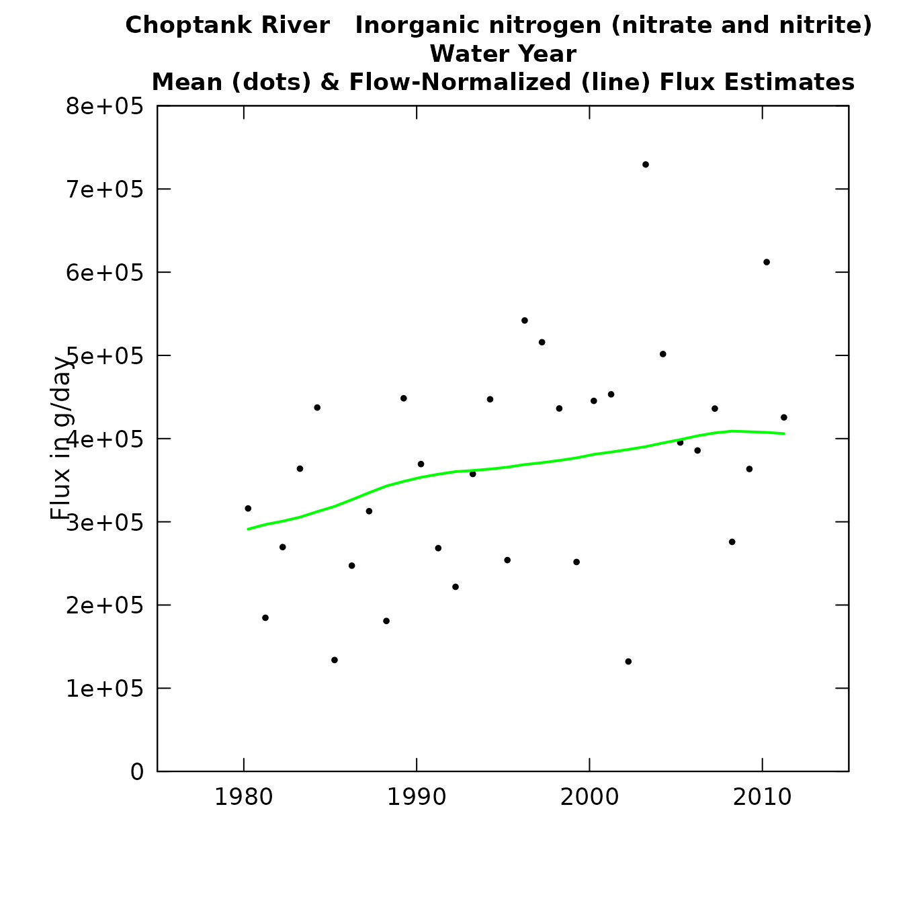

EGRET was designed for water-quality and streamflow
exploration. The units for streamflow are stored within the
EGRET object (eList) in m^3/s. The units for the
water-quality measurements are stored in mg/l. With these units in mind,
all the plots and tables offer the user simple alternatives for display.
This article will describe how to use the different options, and how to
create your own custom labels.
Streamflow
Streamflow values are stored as m^3/s. For plots and tables that
display discharge data, there is a user-argument to the functions called
qUnit. This input can be a numeric between 1 and 4, or it
can be one of the following text: “cfs”, “cms”, “thousandCfs”, or
“thousandCms”. The numeric that lines up with the text can be seen with
the printqUnitCheatSheet function:
## The following codes apply to the qUnit list:
## 1 = cfs ( Cubic Feet per Second )
## 2 = cms ( Cubic Meters per Second )
## 3 = thousandCfs ( Thousand Cubic Feet per Second )
## 4 = thousandCms ( Thousand Cubic Meters per Second )Here is an example of using the default (qUnit = 2 which
corresonds to “cms”), compared to using qUnit = 1
(corresponding to “cfs”):


Plots of discharge with different units.
Custom Units
There could be a scenario where EGRET analysis is not
done using a streamflow value. For example, let’s say we want to use
precipitation as a substitution for discharge. A very important point
here is that if you use data that are not designed for the
EGRET software, it will probably not make sense to use the
flux calculations. But, there are places where EGRET graphs
and tables will be interesting using this alternative data.
Here is an example of how to make a custom qUnit object.
It is not as simple as adding a single line of text. This is because the
software needs to know how to create nice labels for a variety of
different kind of plots, and if there is a conversion factor, it would
need to know that conversion factor. This example shows how to make a
custom qUnit for precipitation with millimeters as the
unit:
qConst_precip <- new("qUnit",
qShortName = " mm ",
qUnitFactor = 1,
qUnitName = "Millimeter",
qUnitExpress = expression(paste("Precipitation in ",mm)),
qUnitTiny = expression(paste("Precipitation ", "(", mm, ")")),
shortCode = 1,
unitUSGS = "Precipitation, in mm",
prefix = "Precipitation")Each “slot” in this qUnit object are required, the
qShortName, qUnitName, unitUSGS, and prefix must be characters. The
qUnitFactor must be a numeric (this would be the conversion factor that
the data gets multiplied by). qUnitExpress and qUnitTiny are
“expressions” which allows the text to be formatted. To use this custom
unit:
plotConcQ(eList, qUnit = qConst_precip)Plot with custom axis, using precipitation instead of discharge.
Data input
Other values can be used to input the data, but that data will be
converted to m^3/s with the qUnit argument when the eList
is created. So if you have data that is coming in that is in cubic feet
per second, you could use the readDailyUser function, and
specify qUnit = 1. This will take your cfs data, and store
it properly as cms.
Concentration
Concentration values are stored as mg/l. This is the only option that
comes by default in EGRET. However, you can change the unit
display using the eList$INFO$param.units (there are not
conversion options however). You can also create a custom
concUnit as shown below:
Flux
There are a variety of units of flux that can be used. For plots and
tables that display flux data, there is a user-argument to the functions
called fluxUnit. This input can be a numeric between 1 and
13, or it can be one of the following text:
names(fluxConst)## [1] "poundsDay" "tonsDay" "kgDay" "thousandKgDay"
## [5] "tonsYear" "thousandTonsYear" "millionTonsYear" "thousandKgYear"
## [9] "millionKgYear" "billionKgYear" "thousandTonsDay" "millionKgDay"
## [13] "kgYear"The numeric that lines up with the text can be seen with the
printFluxUnitCheatSheet function:
## The following codes apply to the fluxUnit list:
## 1 = poundsDay ( pounds/day )
## 2 = tonsDay ( tons/day )
## 3 = kgDay ( kg/day )
## 4 = thousandKgDay ( thousands of kg/day )
## 5 = tonsYear ( tons/year )
## 6 = thousandTonsYear ( thousands of tons/year )
## 7 = millionTonsYear ( millions of tons/year )
## 8 = thousandKgYear ( thousands of kg/year )
## 9 = millionKgYear ( millions of kg/year )
## 10 = billionKgYear ( billions of kg/year )
## 11 = thousandTonsDay ( thousands of tons/day )
## 12 = millionKgDay ( millions of kg/day )
## 13 = kgYear ( kg/year )Here is a comparison of the default values and a specified flux unit.
plotFluxHist(eList)
plotFluxHist(eList, fluxUnit = 2)

Plots of flux with different units.
Here is an example of how to make a custom fluxUnit
object. It is not as simple as adding a single line of text. This is
because the software needs to know how to create nice labels for a
variety of different kind of plots, and if there is a conversion factor,
it would need to know that conversion factor. This example shows how to
make a custom fluxUnit of grams per day:
gDay <- new("fluxUnit",
shortName = " g/day ",
unitFactor = 1000,
unitName = "g/day",
unitExpress = expression("Flux in g/day"),
unitExpressTiny = expression("Flux (g/day)"),
unitEstimate = expression("flux in g/year"),
unitEstimateTiny = expression("Est. flux in g/day"),
unitUSGS = "Flux, in grams per day",
shortCode = 14)
plotFluxHist(eList, fluxUnit = gDay)
Month
There is also a way to customize the way the months are displayed. This might be useful for non-English speaking users for instance. Although we don’t have the capacity to have a conversion for all of the text, this could come in handy:
spanish_month <- new("monthLabel",
monthAbbrev = c("enero", "feb", "marzo", "abr",
"mayo", "jun", "jul", "agosto", "set",
"oct", "nov", "dic"),
monthFull = c("enero", "febrero", "marzo", "abril",
"mayo", "junio", "julio", "agosto", "septiembre",
"octubre", "noviembre", "diciembre"),
monthSingle = c("E", "F", "M", "A", "M", "J", "J",
"A", "S", "O", "N", "D"))
eList$INFO$param.units <- "mg/L"
concentration_esp <- new("concUnit",
longPrefix = "Concentración",
shortPrefix = "conc.")
boxConcMonth(eList, printTitle = FALSE, showXLabels = FALSE,
monthLab = spanish_month, concLab = concentration_esp)Concentration by month.